작업 흐름
- 입력
- 장소 한 줄 (무엇이었고 왜 버려졌는지, 어느 시간인지)
- 브리프
- 높낮이가 있는 땅과 폐허의 배치, 기계 종류마다 쓰임새 · 크기 · 무게 · 다리 · 걸음 숫자 · 실루엣 · 대기 동작 · 큰 동작 · 등불, 기계가 다니는 길, 기계가 바로 옆을 지나가는 장면
- 숫자로 먼저 검사
gym.mjs가 브라우저 없이 몇 초 만에 기계를 걸려 봄. 시험 코스(경사로 · 턱 · 옆경사 · 도랑 · 둔덕)와 실제 지형의 길에서 다리 도달, 역관절, 디딘 발 미끄러짐(4 mm 이하), 발바닥과 땅의 틈, 지지, 실린더, 몸통 가속, 대기 동작, 예비 동작과 회복, 결정성을 숫자로 보고- 부품과 세계
- 관절마다 드럼 · 포크 · 핀, 고정점을 스크립트가 찾는 유압 실린더, 그 위에 붙는 부속품(배관 · 호스 · 리벳 · 해치 · 그릴 · 탱크 · 사다리 · 난간), 종류마다 새로 쓰는 몸통 · 머리 · 짐 · 등불, 스캔 재질과 모델로 채우는 폐허와 숲, 땅에 눌린 발자국과 닳은 기계 길
- 확인
- 종류별 캐스트 시트(앞 · 뒤 · 좌우 · 3/4 네 방향 · 걷기 · 대기 · 큰 동작)와 팔 닿는 거리의 확대 시트(몸통 · 배 밑 · 엉덩이 · 무릎 · 발 · 머리), 안개 속 등불이 보이는지까지 재는 페이지 검사, 스틸
- 출력
- 걸어 다니는 페이지(
index.html+assets/, 또는 Poly Haven 서버에서 읽는 HTML 한 파일), 캐스트 시트 · 지형 지도 · 스틸
cp -r machine-wilds/starter my-realm
node machine-wilds/scripts/gym.mjs my-realm --course --sheet # 시험 코스 위의 기계 (브라우저 없이)
node machine-wilds/scripts/gym.mjs my-realm --map --sheet # 실제 지형의 길과 발자국
node machine-wilds/scripts/fetch-assets.mjs my-realm # 스캔 28 MB (Poly Haven, CC0)
node machine-wilds/scripts/build.mjs my-realm # index.html
node machine-wilds/scripts/render.mjs my-realm --cast # 종류별 캐스트 시트
node machine-wilds/scripts/render.mjs my-realm --cast --close # 가까이서 본 확대 시트
node machine-wilds/scripts/check.mjs my-realm # check OK
cd my-realm && python3 -m http.server 8000 # 걸어 보기조작: W A S D · 방향키로 걷기, 마우스로 둘러보기(클릭하면 고정), Shift 달리기, Space 뛰기. 모바일은 왼쪽 엄지가 조이스틱, 오른쪽 엄지가 시선(오른쪽을 톡 치면 뛰기). 방호벽과 난간은 뛰어서 올라설 수 있고, 다리에서 뛰어내리면 떨어져 착지한 뒤 기계에게 걸어갈 수 있습니다. 1–4 시간, 5–8 날씨(8이 안개), T 자동 순환, C 자동 산책, M 소리, P 성능 수치. 오르막에서는 느려지고 43°보다 가파른 면은 오르지 못합니다. 기계의 다리 사이로 지나갈 수 있고, 가까이 가면 기계가 머리를 돌려 비춥니다. 소리는 페이지에서 합성하며 먼 발소리는 거리만큼 늦게 들립니다. 요구 사항: Node 18+ · Playwright Chromium · curl · ffmpeg (gym.mjs는 Node만), 페이지는 WebGL 2와 GPU. 이 페이지의 스틸은 GPU가 없는 환경에서 640 × 360으로 렌더했고, 실제 GPU에서의 프레임 속도는 재지 못했습니다. 기계 등불은 자기 그림자를 만들지 않습니다(빛기둥이 나무 뒤로 샐 수 있음). 단계별 순서는 SKILL.md에 있습니다.
샘플
예제 「쇠울림 골짜기」와 스타터 「Lantern Quarry」의 스틸, 그리고 기계를 검사하는 시트입니다. 장면 카드를 누르면 라이브 데모가 그 자리 · 그 시각에서 열리고, 시트 카드를 누르면 해당 소스가 열립니다.
쇠울림 골짜기 examples/iron-valley · 기계 네 종류 열한 대와 잔해 하나
고갯길의 정비 구역이 버려진 지 사십 년, 감시 · 운반 · 중계를 하던 기계들은 여전히 제 길을 돕니다. 가로 640 m, 높낮이 50 m.
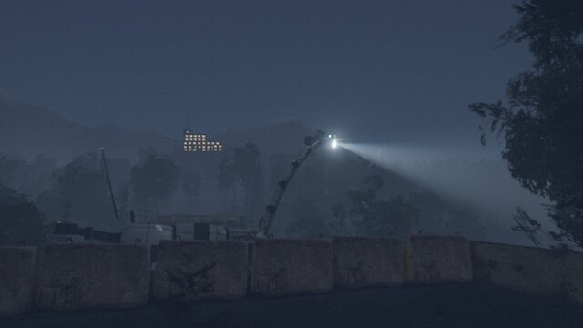
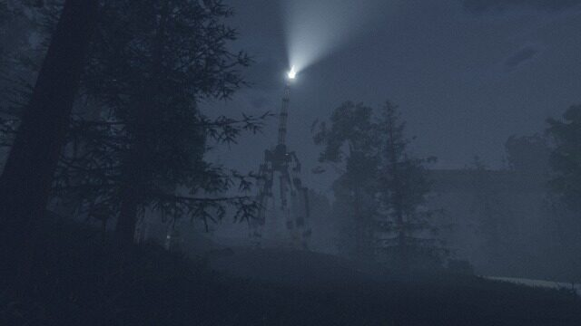
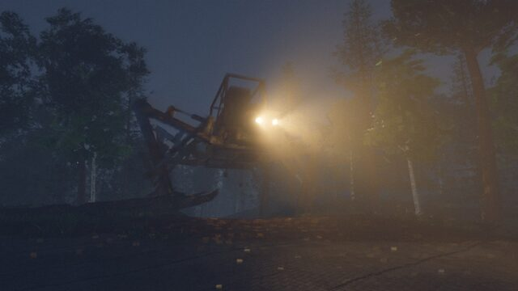
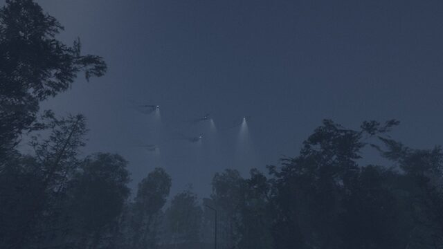
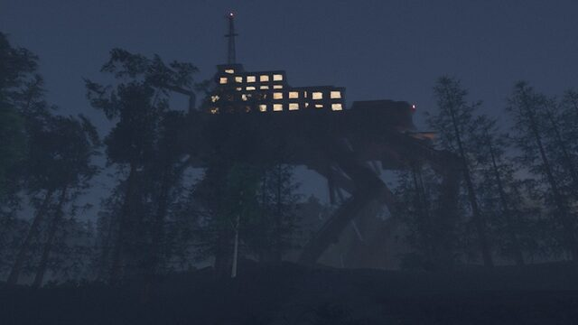
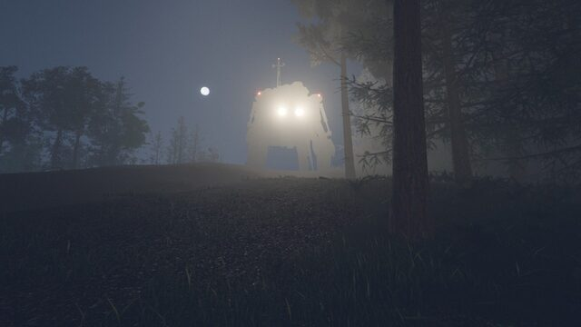
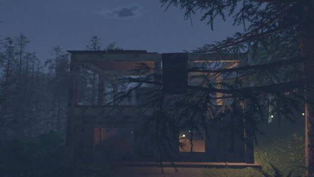
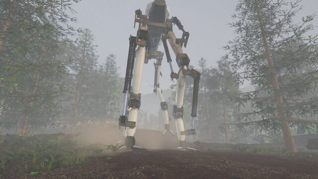
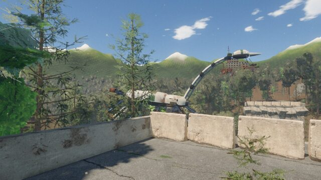
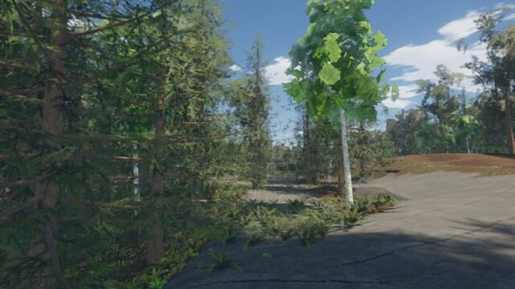
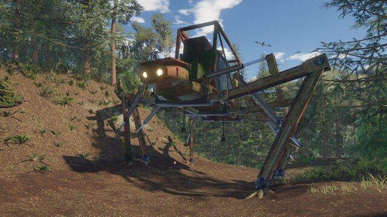
검사 시트 렌더 전에 숫자와 그림으로
기계는 스튜디오에서 사방으로 돌려 보고, 걸음은 실제 지형의 단면 위에 그려 봅니다. 통과하지 못하면 숫자나 길을 고칩니다.
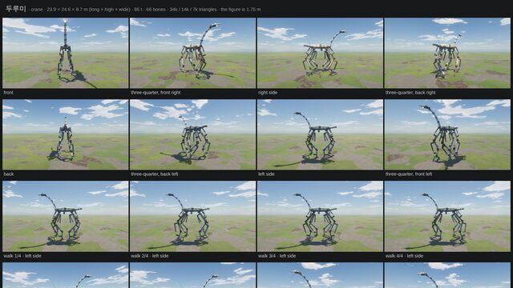
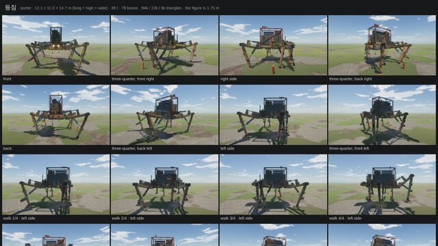
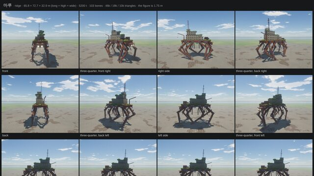
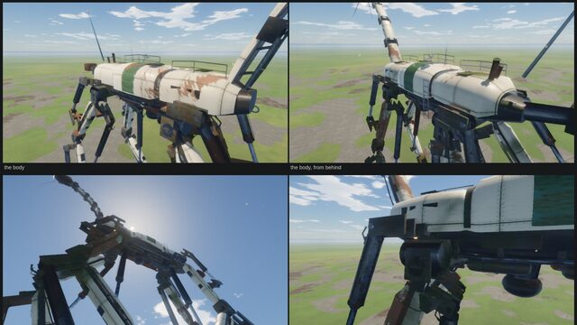
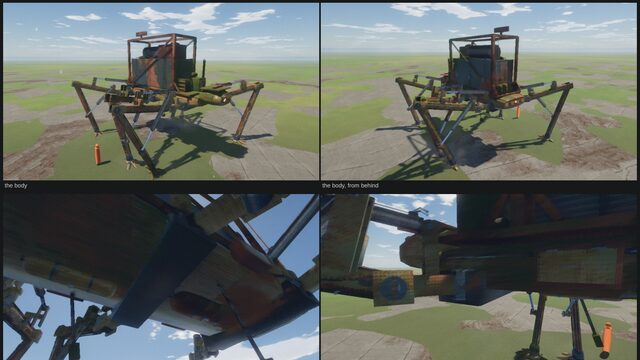
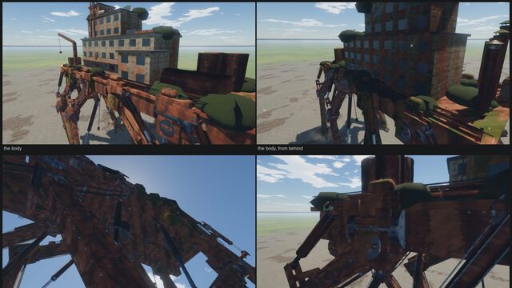
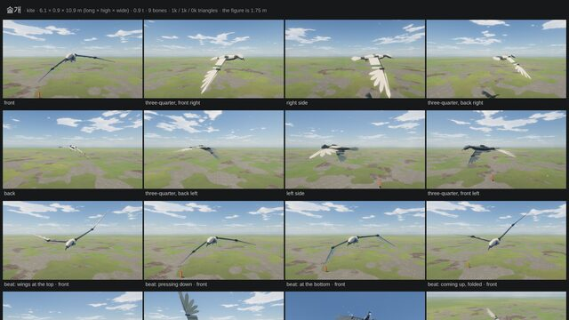
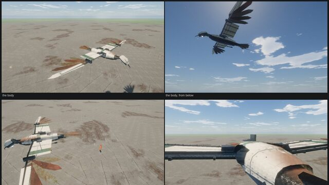
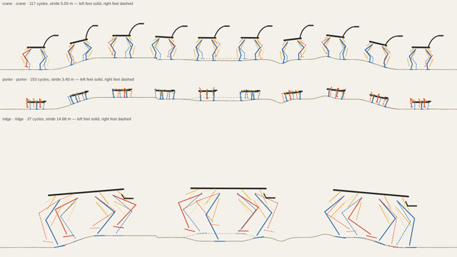
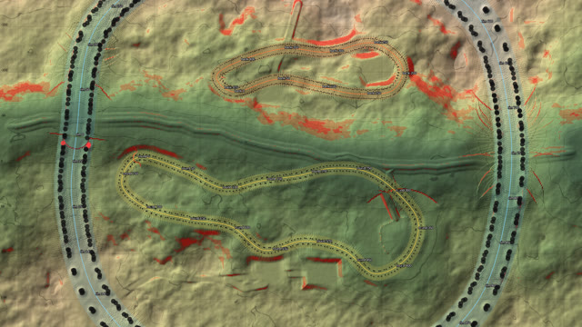
스타터 「Lantern Quarry」 starter · 다른 주제로 끝까지
계단식으로 깎은 채석장이 물에 잠긴 곳. 무릎이 뒤로 가는 두 마디 다리의 등불 기계를 새로 설계해, 한 대는 가장자리를 돌고 한 대는 물속에 서 있습니다.
실제 작품
이 스킬은 이 레포 안에서, 세 스킬(scanned-realm · walking-colossus · machine-build-reel)을 바탕으로 만들었습니다. 스캔은 Poly Haven의 CC0 에셋이며 저장소에 넣지 않고 페이지가 Poly Haven 서버에서 읽습니다.
링크
- SKILL.md 워크플로
- 폴더 lib · scripts · references · starter · examples
- README.md 빠른 시작
- references/MACHINES.md 기계 설계: 숫자 · 부품 · 길 · 검사의 뜻
- references/BRIEF.md 주제 → 브리프, 검토 기준
- references/KIT.md 엔진의 빌더와 옵션
- references/ASSETS.md 스캔 고르기 · 라이선스
- references/LOOK.md 화면을 만드는 것과 한계
- references/PERF.md 비용과 예산
- references/SOURCE.md 무엇을 어디서 가져왔는지
- references/LESSONS.md 겪은 문제와 해결